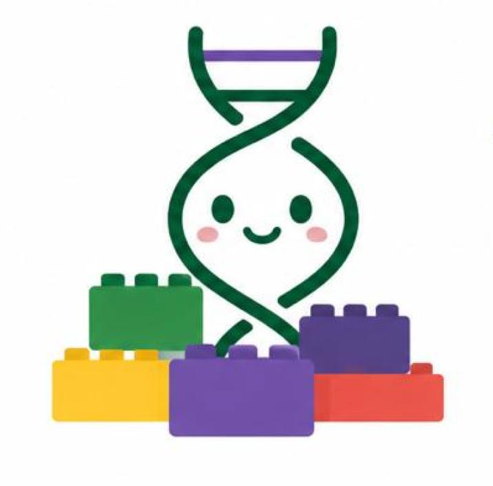

The Stanford 2026 iGEM team created SynBase in response to a problem we noticed.
Stanford iGEM back in 2023 launched a summer program called the Stanford iGEM Bioengineering Research Program (SiBRP). It was free and online, designed to increase the accessibility of synthetic biology education for high schoolers and incoming college freshmen around the world.
But from those initial few hundred applications we received, our program grew exponentially — to the point where we found ourselves forced to consider: how could we run a program centered on accessibility, yet turn down thousands of qualified applicants?
So we decided to engineer a solution. Our team spent the summer of 2026 carefully redeveloping the educational materials from SiBRP for an open online educational platform, the very one you're now on!
No fees, no application. No prerequisites, no maximum student cap. Just a home to catalyze your synthetic biology learning… a SynBase, dare we say.
An incredible learning experience that truly built my confidence in bioengineering and synthetic biology.
Want to learn more about Stanford iGEM? Check out our main website, where you can find a timeline of our team's history, links to all of our past projects, and more!
Instagram: @stanford_igem
YouTube: @StanfordiGEMTeam
Email: stanfordigemteam@gmail.com